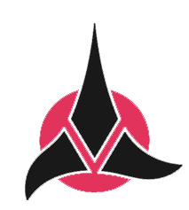
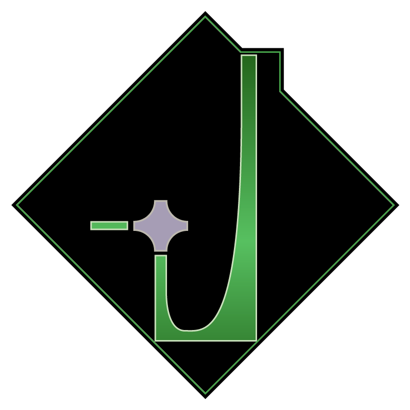
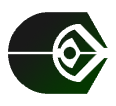
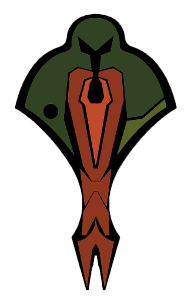

The Federation
The Federation is a unified collection of planets and species, meant to allow for easy trade and peace among worlds. some notable species
in the federation include Humans, Vulcans, and Bolians. The Emblem is based on the UN emblem from earth, The olive branches signify peace
and the stars in the center signify expoloration and the members within the federation. It's also worth noting that federation vessels are
prohibited from using cloaking devices.
The Klingon Empire

The klingon empire is a feudal militaristic empire. Klingons are known for having a great sense of honor, and find the most honerable thing
to do is to give their life up for the empire. The klingons used to be subjugated by the Hur'q which were thought of as gods. Later the Klingons
killed their gods and gained their freedom.In the klingon empire race means a lot and they won't hesistate to attack you for accidently venturing
into their space.
The Dominion

The Dominion is debatably the strongest empire and is the only empire located within the gamma quadrant. We only know of the dominion through a
wormhole near Bajor. The dominion are lead by The Founders which are a race also known as Changelings. They are thought of as gods by the Vorta
and Jemm Haddar which are thought to be genetically engineerd by the founders to help better run the Dominion.
The Ferengi

The Ferengi Alliance is known to be the largest traders in the universe. It's hard to get anything without it either being form a ferengi or traded
through a Ferengi. Since birth Ferengi are taught how to run a business, they're even given a set of rules called "the rules of acquisition" which
are meant to give a Ferengi "the lobes of business". Ferengi are known to do anything to get a little extra latinum, even betray others.
The Cardassian Union

The Cardassian Union used to be known for it's art and culture but in recent years more for it's military. After an economic collapse the military took
over. The Cardassian Union is also known for it's secret service known as "The Obsidian Order". Cardassia continues to struggle after being put in the
middle of the Dominion War.